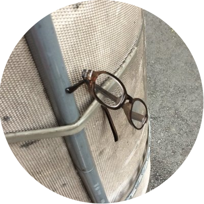

HASH1da1
東京でフォレンジックエンジニアをしています。
岩手県出身です。
地元の短大卒業後、地元の企業で 営業をやっていました。
その後１年のフリーター期間を経て現職です。
Hobby
ThinkPadが好きです。X270にWindows10 ProとLubuntuを入れてデュアルブート環境で使っています。
趣味は自作PC、ギター、音楽です。
お酒が好きです。
よく吐くのでリバースエンジニアだなって（違う）
趣味は自作PC、ギター、音楽です。
お酒が好きです。
よく吐くのでリバースエンジニアだなって（違う）
Skills
できることと、できるようになりたいこと
できること
- Forensic
- Disk Forensic
- Memory Forensic
- Network Forensic
- Hardware
- Disk System(HDD, SSD)
- Building PC
- PC Modified
- Software,OS
- AXIOM
- EnCase
- FTK Imager
- WireShark
- Kali Linux
- Sift Workstation and more...
できるようになりたいこと
- OSINT(勉強中)
- Web Frontend(勉強中)
- Web Backend(勉強中)
I'm looking for a job.
Please hiring me!!!
というわけで、絶賛転職活動中です。
今はベンダとしてフォレンジック調査サービスを提供したりしています。
調査サービスの他には、フォレンジック製品の提案、CSIRT構築支援等をやってます。
実務ではないですが、脆弱性診断・ペンテストサービスの調整とかもやっています。